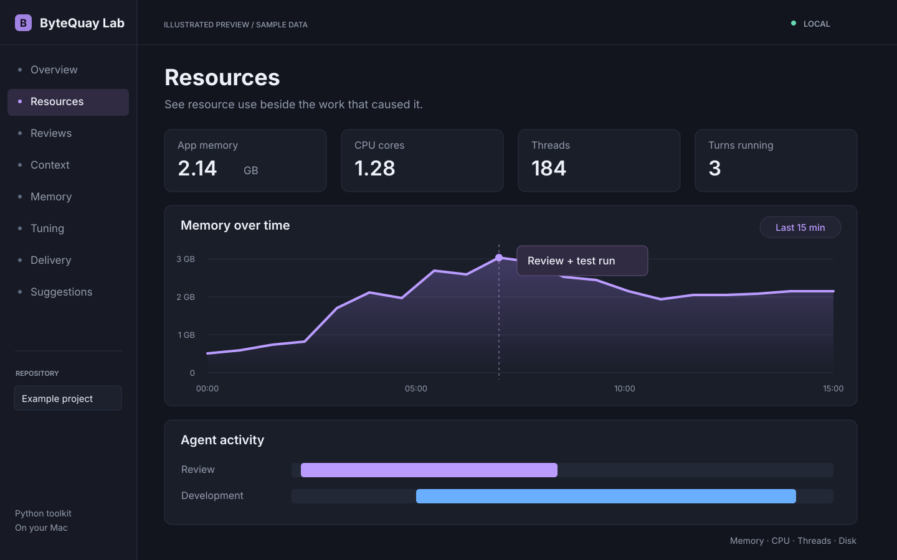
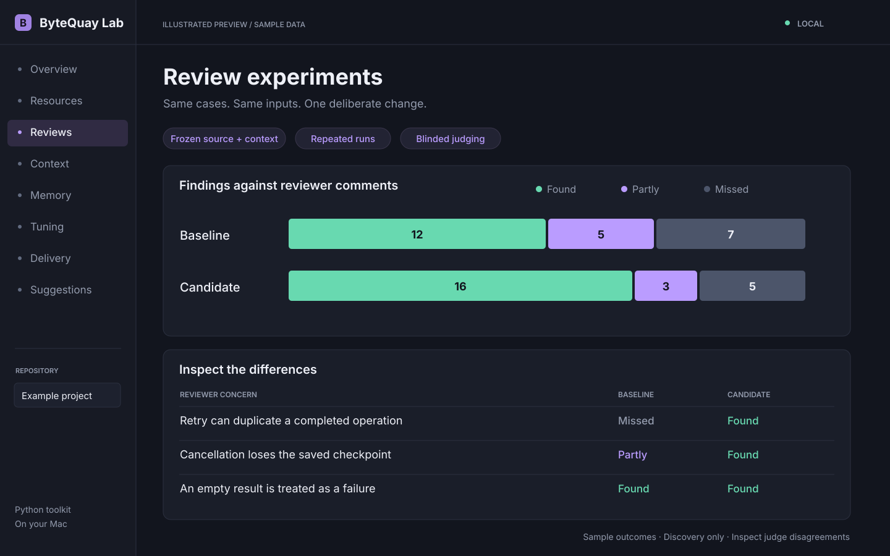
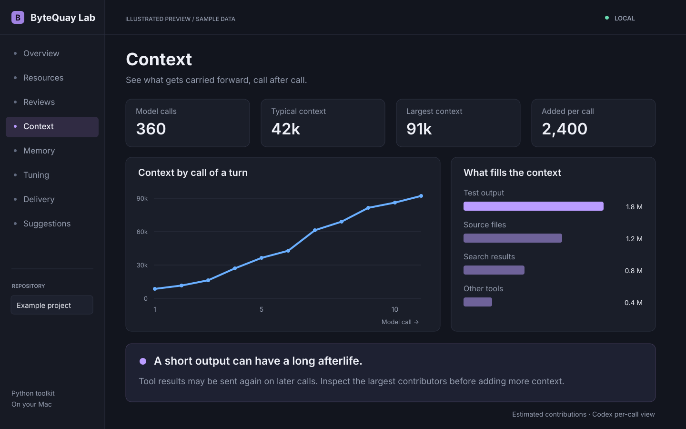
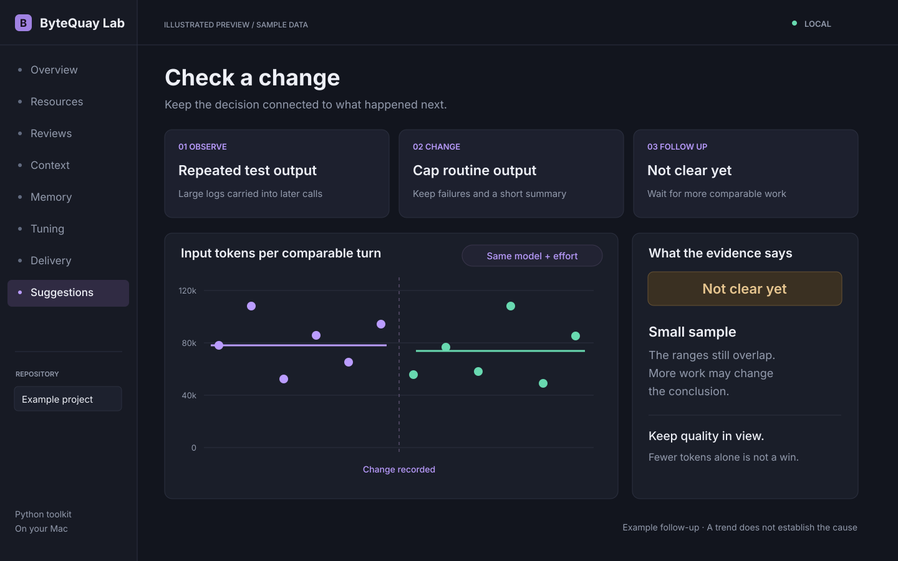

The Lab guide
Use ByteQuay Lab.
Start the dashboard, choose a question, and follow the evidence.
← About ByteQuay LabStart the Lab
Run a few tasks first so there is activity to read. Then choose Settings → Integrations → Lab → Open Lab. No terminal or Python is needed.
- App health shows recent errors, send latency, and resource use, with suggested actions. Analyze now refreshes it.
- Start resource monitoring tracks memory and CPU until you stop it on Processes.
- Agent activity shows agent performance, review guidance, and context costs.
Show the Lab adds a sidebar shortcut. The dashboard stops when ByteQuay quits.
Check resources

Run uv run monitor.py for a snapshot. For history,
use uv run monitor.py --start: it installs a local
login service, samples every 15 seconds, and refreshes analysis
hourly. --stop removes the service.
Open Resources to compare memory, CPU, and disk use with running turns. Processes shows the Lab’s own programs. Look for risks optionally asks DeepSeek for advice; it does not apply changes.
Find where time goes
Open Agent activity and filter by days, repository, and model. Analyze now updates all Lab statistics.
- Overview / Time: model work, tools, and waiting for you.
- Slow spots / Tools: slow, repeated, or failed calls.
- Models / Cost: time, tokens, and known costs. Estimates are not subscription bills.
- Approvals: try rules against past requests without changing settings.
Compare review guidance

- Build cases from public PRs with reviewer comments. Freeze the code and context available at the review cutoff.
- Compare a baseline and candidate on the same cases. Keep other settings fixed, repeat runs, and save unseen cases for a final check.
- Run and judge the plan in Reviews. Use Judge to compare human labels without seeing the model verdict first.
Results are Found, Partly, or Missed. Extra leads are unjudged; failed and incomplete runs stay separate. This tests review discovery, not the full workflow.
Inspect context and memory

Context shows Codex input growth by call and estimates which outputs contribute most. Claude currently provides turn totals only.
Memory shows what was supplied, cited, and associated with resolved or withdrawn findings. Citations indicate use, not proven value. Inspect a candidate, narrow it, and compare both cost and quality.
Check outcomes
- Tuning: steering, approvals, retries, and instruction setups. Follow-up messages can be new work as well as corrections.
- Delivery: effort behind results reported ready by the agent. “Ready” does not mean merged or independently verified.
- Reviews: resolved versus withdrawn findings. Resolution is not a correctness audit.
Follow a change

- Read a Suggestion and its metric. Choose Working on it or Not wanted.
- Make the change, then select I made this change.
- Return after more comparable work. Read helped, made it worse, or not clear yet, with the sample size and uncertainty.
Report summarizes a day or week.
What became of them keeps earlier decisions
visible. uv run digest.py saves a report from current
tables.
Read results fairly
- Missing data is unknown, not zero.
- Check sample size, uncertainty, failures, and judge disagreements.
- Compare similar work; before-and-after trends do not establish a cause.
- Check quality alongside time, tokens, and cost.
Data and controls
The dashboard runs on localhost. Saved tables, experiments, and
reports live under
~/Library/Application Support/ByteQuay Lab.
Ordinary analysis reads app data locally. Optional experiments send frozen inputs to your selected provider; judging sends comments and leads to DeepSeek; resource advice sends measured counters and prior risk titles.
Clean up deletes eligible app data only after confirmation. The website never connects to your Lab.